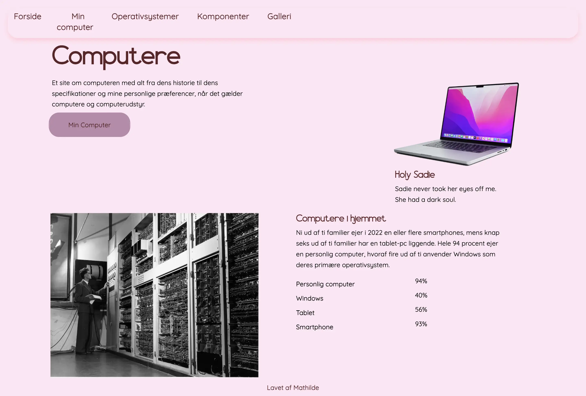
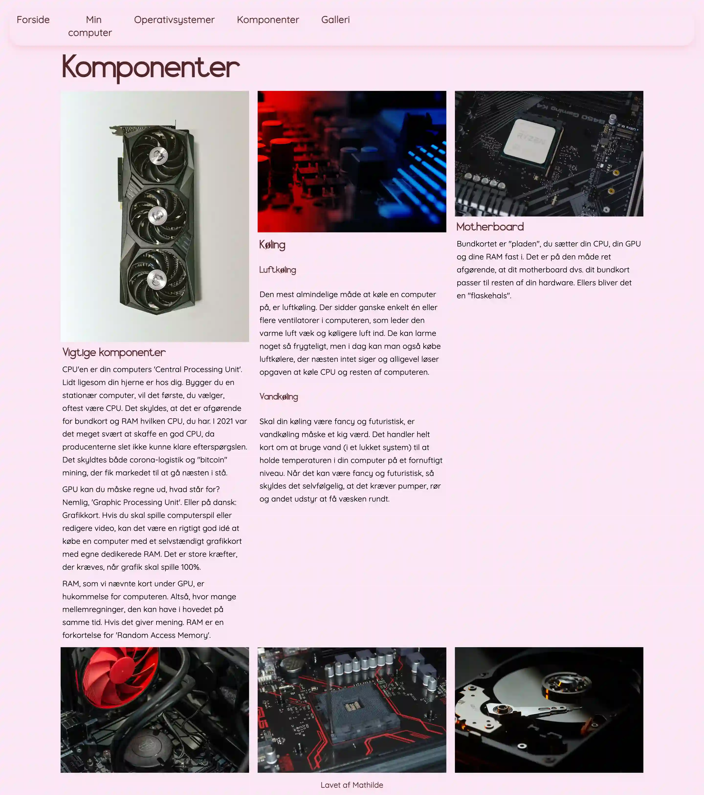
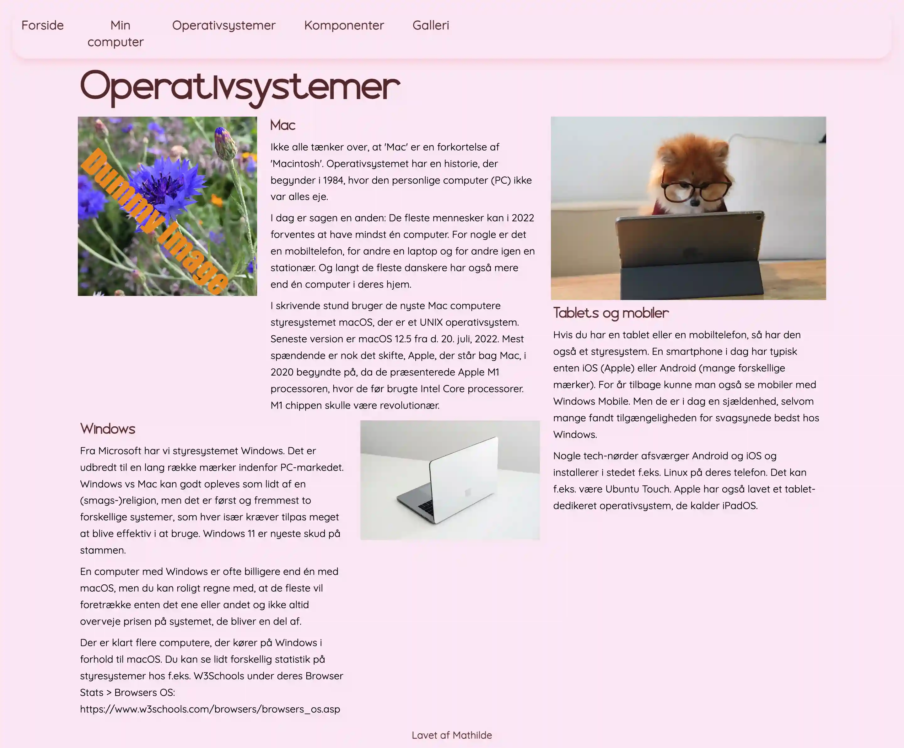

Tema 02 - Grundlæggende web

I Tema 02 – Grundlæggende Web, blev jeg introduceret til bl.a. Visual Studio Code og Figma. Her lærte jeg om basis kodning i HTML og CSS, og at benytte bl.a. grid og flexbox i VS code. Jeg fik kendskab med begreber som designkonventioner, gestaltprincipper og wireframes. Under forløbet blev jeg også bekendt med filformater, herunder jpg, webp, png osv.
Da jeg skulle kode studiestartsprøven, var kodning helt nyt for mig, og jeg havde derfor forholdsvis svært ved det. Jeg gjorde rigtig stor brug af ”inspect”-værktøjet i min browser, for at se eventuelle fejl, og for at kunne rette i min kode midlertidigt – uden at det påvirkede min kodning permanent.
"Computere"-side
"Komponenter"-side
"Operativsystemer"-side
